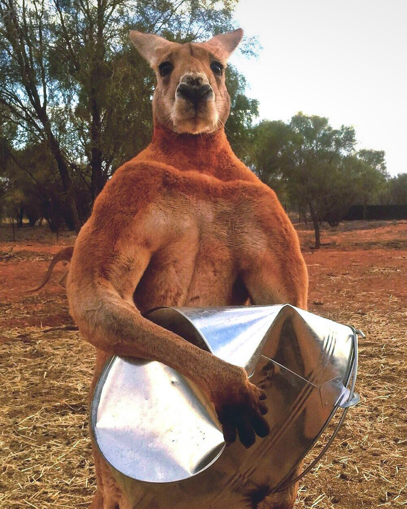

The proboscis monkey often looks depressed. With a nose that big, who wouldn't be?
(They're not for free, but then again nothing in life really is.)
When a Kangaroo hops, the world stops.

He never skips a day at the gym.
| Red Kangaroo | Antilopine Kangaroo | Eastern grey Kangaroo | Western grey Kangaroo |
|---|---|---|---|
| The fur is usually red-brown, though some eastern females can be blue-grey | Has a triangular-shaped body with large, powerful hind legs and feet, together with a large solid tail | Females have one baby at a time, which at birth is smaller than a cherry. | Western Grey Kangaroos are distinguished from other kangaroos because they have a finely haired muzzle |
This large, stocky mammal is a marsupial, or pouched animal, found in Australia and on scattered islands nearby. Like other marsupials, the wombat gives birth to tiny, undeveloped young that crawl into a pouch on their mother's belly. A wombat baby remains in its mother's pouch for about five months before emerging. Even after it leaves the pouch, the young animal will frequently crawl back in to nurse or to escape danger. By about seven months of age, a young wombat can care for itself.
The ride is over now, thanks for visiting.